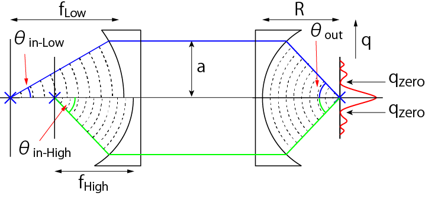
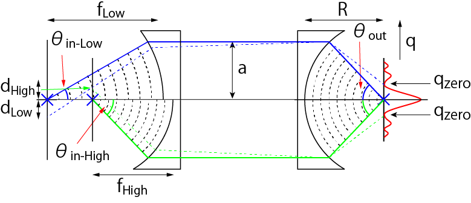

レンズによる集光-04
レンズのNAによる違い
下図のように，結像レンズは共通で，対物レンズのNAが異なる場合を考えていきましょう．

それぞれの倍率は，
\(\Large M_{Low} = \frac{sin \ \theta_{out}}{sin \ \theta_{in-Low}} \)
\(\Large M_{High} = \frac{sin \ \theta_{out}}{sin \ \theta_{in-High}} \)
となります．

次に，結像面の強度分布において，最初に強度が０となる位置から逆算していくと，
\(\Large q_{zero} = 0.61 \frac{\lambda}{ \ sin \ \theta_{in-Low}} M_{Low} \)
\(\Large q_{zero} = 0.61 \frac{\lambda}{ \ sin \ \theta_{in-High}} M_{High} \)
となり，
\(\Large q_{zero} = d_{Low} \times M_{Low} \)
\(\Large q_{zero} = d_{High} \times M_{High} \)
なので，結局，
\(\Large d_{Low} = 0.61 \frac{\lambda}{ \ sin \ \theta_{in-Low} } \)
\(\Large d_{High} = 0.61 \frac{\lambda}{ \ sin \ \theta_{in-High} } \)
となります．屈折率を考慮に入れて，
\(\Large d_{Low} = 0.61 \frac{\lambda}{ n \ sin \ \theta_{in-Low} } \)
\(\Large d_{High} = 0.61 \frac{\lambda}{ n \ sin \ \theta_{in-High} } \)
当たり前の結果ですが，NAが大きくなるとｄが小さくなります，つまり分解能がよくなります．